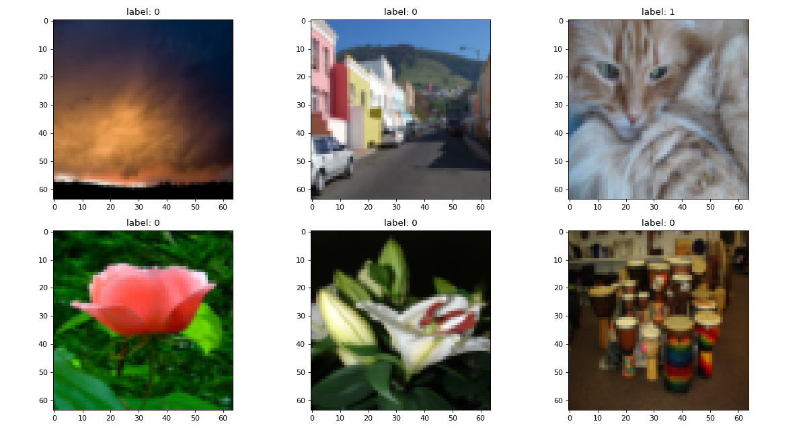
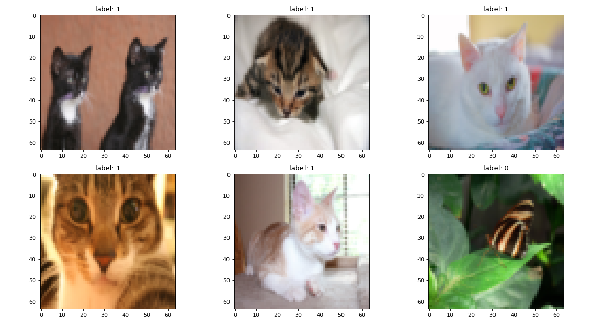
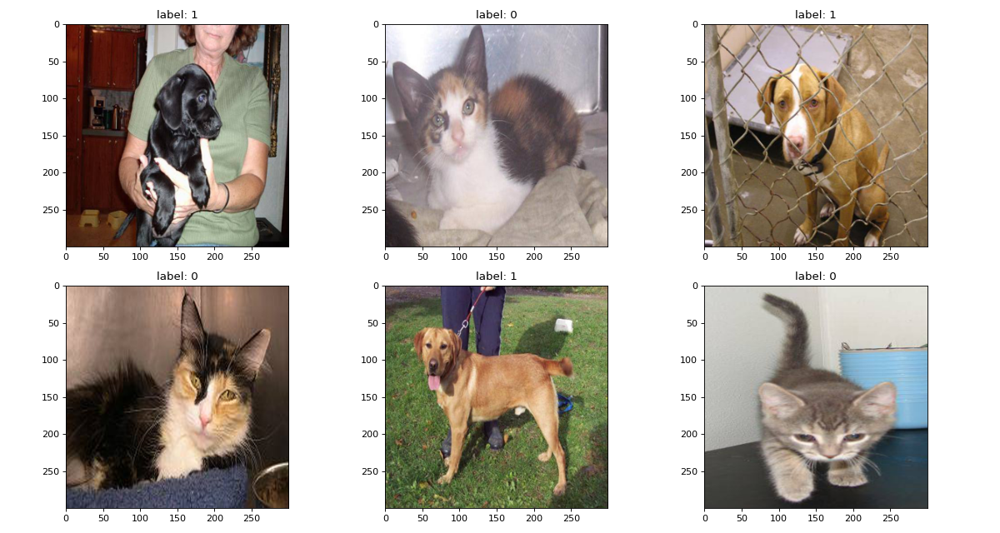
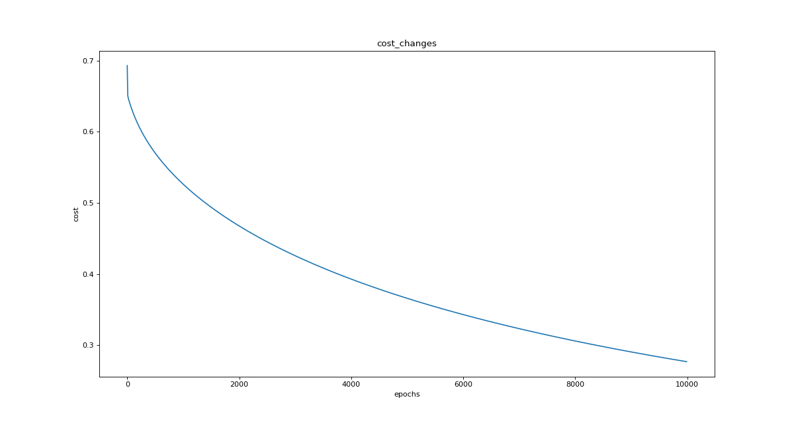
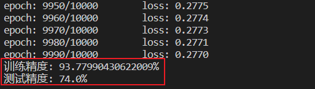

不借助深度学习框架来实现简单的逻辑回归模型来识别猫咪.
逻辑回归
Logistic Regression 用于二分类算法(binary classification)
Logistic Regression可以表示为:
$$
\hat{y} = \sigma(W^T x + b)
$$
Loss function:
$$
L(\hat{y}, y) = -(ylog\hat{y} + (1-y)log(1-\hat{y}))
$$
Cost function:
$$
J(w, b) = \frac{1}{m} \sum_{i=1}^m L(\hat{y}, y) = -\frac{1}{m} \sum_{i=1}^m [y^{(i)}log\hat{y}^{(i)} + (1 - y^{(i)})log(1 - \hat{y}^{(i)})]
$$
猫咪识别
构建一个逻辑回归模型, 并用它识别猫咪图像.
数据集
使用了两个数据集:
数据集使用网上关于吴恩达老师逻辑回归的数据集: train_catvnoncat.h5 & test_catvnoncat.h5
- 1 – 表示猫咪
- 0 – 表示非猫咪
训练样例: 测试样例:
数据集1 - 训练样例
数据集1 - 测试样例
第二个数据集是从Kaggle中下载: https://www.kaggle.com/c/dogs-vs-cats/data
数据样例:- 1 – 表示狗
- 0 – 表示猫

数据集2 - 样例
导包
1 | import os |
图像显示
1 | def show_img(img_data_set, labels): |
数据预处理
处理数据集 1
1 | def pro_h5_data(data_path, train=True): |
处理数据集 2
对数据集 2 的处理可以方便以后使用框架加载数据集
1 | # 清洗数据 |
sigmoid函数
sigmoid激活函数:
$$
\sigma(z) = \frac{1}{1 + e^{-z}}
$$
1 | def sigmoid(z): |
L2范数惩罚 - 防止过拟合
1 | def l2_penalty(w): |
前向传播和反向传播
1 | def forward(W, b, X, y, lambd): |
SGD优化算法
该方法可以使用:
- SGD
- Mini-batch SGD
- 带有L2范数惩罚的 Mini-batch SGD
1
2
3
4
5
6
7
8
9
10
11
12
13
14
15
16
17
18
19
20
21def optimiser(W, b, X, y, learning_rate):
"""
Mini-batch SGD
w -= (learning_rate / |B|) * dw
b -= (learning_rate / |B|) * db
"""
lambd = 3
B = X.shape[0] # 6
grads, cost = forward(W, b, X, y, lambd)
dw, db = grads['dw'], grads['db']
# 带有L2惩罚的SGD
# W = (1 - (learning_rate * lambd) / B) * W - (learning_rate / B) * dw
# b = (1 - (learning_rate * lambd) / B) * b - (learning_rate / B) * db
# Mini-batch SGD
# W -= (learning_rate / B) * dw
# b -= (learning_rate / B) * db
# SGD
W -= (learning_rate / B) * dw
b -= (learning_rate / B) * db
return W, b, cost初始化参数
1
2
3
4
5def init_weights(input_dims):
# W = np.random.normal(loc=0, scale=0.1, size=(input_dims, 1))
W = np.zeros(shape=(input_dims, 1))
b = 0
return W, b显示Loss变化曲线
1
2
3
4
5
6
7def draw_changes(changes, epochs, title):
fig = plt.figure(figsize=(15, 8), dpi=80)
plt.plot(epochs, changes)
plt.title(title)
plt.xlabel('epochs')
plt.ylabel('cost')
plt.show()模型训练
1
2
3
4
5
6
7
8
9
10
11
12
13
14
15
16
17
18
19
20
21
22
23
24
25
26
27
28
29
30
31
32
33
34
35
36
37def trainh5(W, b, num_epochs, learning_rate, X, y):
print(f'trainh5_X.shape = {X.shape}') # (209, 64, 64, 3)
print(f'trainh5_y.shape = {y.shape}') # (209,)
cost_changes = []
for epoch in range(num_epochs):
# 构造dataloader
# X, y = img_data_set, labels
# 改变数据形状
X = X.reshape(X.shape[0], -1) # (209, 12288)
y = y.reshape(-1, 1) # (209, 1)
# optimiser
W, b, cost = optimiser(W, b, X, y, learning_rate)
if epoch % 10 == 0:
print(f'epoch: {epoch}/{num_epochs} \t loss: {float(cost):.4f}')
cost_changes.append(cost)
draw_changes(cost_changes, list(range(0, num_epochs, 10)), 'cost_changes')
return W, b
def train(W, b, num_epochs, learning_rate, img_data_set, labels):
cost_changes = []
for epoch in range(num_epochs):
# 构造dataloader
for X, y in build_dataloader(img_data_set, labels, batch_size=128):
# X, y = img_data_set, labels
# 改变数据形状
X = X.reshape(X.shape[0], -1) # (6, 270000) 6是batch_size
y = y.reshape(-1, 1) # (6, 1)
# optimiser
W, b, cost = optimiser(W, b, X, y, learning_rate)
if epoch % 10 == 0:
print(f'epoch: {epoch}/{num_epochs} \t loss: {float(cost):.4f}')
cost_changes.append(cost)
draw_changes(cost_changes, list(range(0, num_epochs, 10)), 'cost_changes')
return W, b
预测
1 | def prediction(W, b, train_X, train_y, test_X, test_y): |
main方法
1 | if __name__ == '__main__': |
结果展示
- Loss 变化

Loss变化曲线 - 训练和测试准确率

准确率